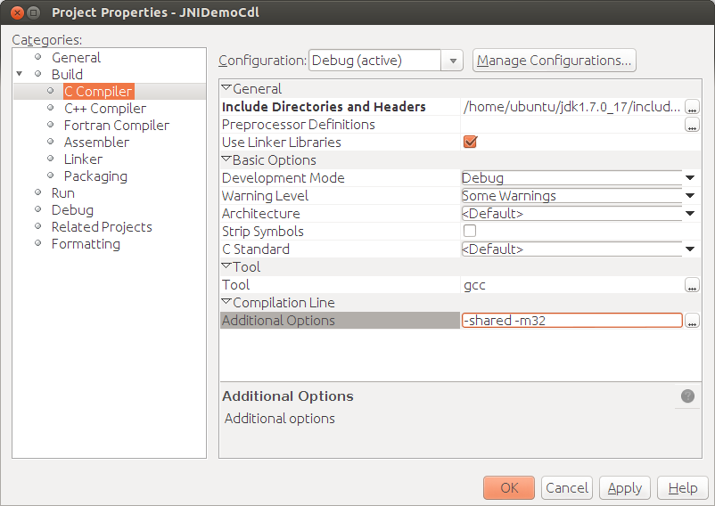

Apache NetBeans
Apache NetBeansBeginning JNI with NetBeans IDE and C/C++ Plugin on Linux
| This tutorial needs a review. You can edit it in GitHub following these contribution guidelines. |
This tutorial takes you through the creation of a simple application that uses JavaTM Native Interface (JNI) code written in the C programming language.
The tutorial is specific to Linux.
Requirements
To follow this tutorial, you need the following software and resources.
| Software or Resource | Version Required |
|---|---|
NetBeans IDE |
|
Java Developer Kit (JDK) |
|
C and C++ compilers, |
See the NetBeans IDE 8.0 Installation Instructions and Configuring the NetBeans IDE for C/C++/Fortran for information on downloading and installing the required software.
Setting Up Your Environment for the Tutorial
You need both Java modules and C/C modules for this tutorial. If you already have downloaded the NetBeans IDE C/C bundle, you can download the additional Java modules separately.
To determine if you have the Java and C/C modules, select File > New Project. The project categories should include both Java and C/C.
To download Java and C/C++ modules that may be missing:
-
In the NetBeans IDE, select Tools > Plugins.
-
In the Available Plugins tab, select the checkbox for Java or C/C++, depending on which is missing from your IDE. If you already have the plugins, they will be listed in the Installed tab.
-
Click Install.
-
Click Next in the NetBeans IDE Installer dialog box, accept the license terms checkbox, and click Install.
-
Click Finish when the installation is complete.
Setting Up the Java Application Project
This program requires a Java project and a C project. In this section, you will create and configure the Java project for the JNI application you will be developing. You will create a new Java application project, initialize its main class, and add a native method to this class.
-
Choose File > New Project. Select the Java category and Java Application project type. Click Next.
-
In the Project Name field, type
JNIDemoJava.
-
You can change the Project Location to any directory on your computer, but here we use the default NetBeansProjects in the user directory.
-
Leave the Create Main Class checkbox selected and change the Main class name to
jnidemojava.Main.
-
Click Finish.
The IDE creates the NetBeansProjects/JNIDemoJava project folder.
Editing the Main Class Source
-
To open the Main class source in the editor, right-click the
Main.javaclass node and choose Open. -
Replace the line
//TODO code application logic herein themainmethod with the following:
new Main().nativePrint();-
Notice the indicator in the left margin showing an error and lightbulb. Click on the indicator, and you are prompted with a shortcut to create the method
nativePrint.
-
Click on this shortcut and the IDE inserts the following code:
private void nativePrint() {
throw new UnsupportedOperationException("Not supported yet");
}-
Delete the line
throw new UnsupportedOperationException("Not supported yet");-
Modify the
nativePrint()method by inserting thenativekeyword into the method signature so that it now looks as follows:
private native void nativePrint();The native keyword indicates that the method has an implementation located in an external native library. However, at runtime the library location is not clear.
The new main method should look as follows:
public static void main(String[] args) {
new Main().nativePrint();
}
private native void nativePrint();
}-
Right-click the project name and select Clean and Build. The project should build successfully.
Creating the Native Library Header File
In this section we use javah , a Java tool that creates a C header from a Java class.
-
In a terminal window, navigate to the
NetBeansProjectsdirectory. -
Type the following:
javah -o JNIDemoJava.h -classpath JNIDemoJava/build/classes jnidemojava.MainA JNIDemoJava.h C header file is generated in the NetBeansProjects directory. This file is required to provide a correct function declaration for the native implementation of the nativePrint() method. You will need it later when you create the C part of this application.
-
Switch back to the NetBeans IDE window.
Summary
In this exercise you created a new Java application project, specified its location, and defined the package and name of the main class of the project. You also added a new method to the main class and marked it as a method having a native implementation. As a final step, you created a C header file, which is required later for the native library compilation.
Setting Up a New C/C++ Dynamic Library Project
This section shows you how to create the native part of the application. You will create the C++ Dynamic Library project and configure it to be able to build JNI code.
After you have set up the project, you will create the implementation for the native method you declared earlier in the Java part of the application.
-
Choose File > New Project. Under Categories, select C/C. Under Projects, select C/C Dynamic Library. Click Next.
-
In the Project Name field, type
JNIDemoCdl.
-
In the Project Location field, use the same location that you used for the Java application project,
NetBeansProjects. The location should be shown as the default value.
-
Accept the defaults for all other fields and click Finish.
The IDE creates the NetBeansProjects/JNIDemoCdl project folder.
Setting Project Properties
-
Right-click the JNIDemoCdl project node and choose Properties.
-
In the Properties dialog box, select the C Compiler node under the Build properties.
-
Click the Include Directories and Headers … button and click Add in the Include Directories and Headers dialog box.
-
Browse into your JDK directory, and select the
includesubdirectory. -
Select the Store path as Absolute option, then click Select to add this directory to the project’s Include Directories.
-
Add the JDK’s
include/linuxdirectory in the same way, then click OK.
These settings are required to enable references to the Java jni.h library from your C code.
-
Find the Compilation Line area of the C Compiler options. Click in the text field of the Additional Options property and type
-shared -m32. 
The -shared option tells the compiler to generate a dynamic library.
The -m32 option tells the compiler to create a 32-bit binary. By default on 64-bit systems the compiled binaries are 64-bit, which causes a lot of problems with 32-bit JDKs.
-
Click the Linker category in the left panel.
-
Click the Output text field, and replace the string
${CND_DISTDIR}/${CND_CONF}/${CND_PLATFORM}/libJNIDemoCdl.sowith the string
dist/libJNIDemoCdl.soto simplify the path of the resulting shared object file. This will make the file easer to reference from Java.
-
Click OK. The defined settings are saved.
Adding a Header File
-
Go to a terminal window and move the
JNIDemoJava.hheader file that you generated previously from yourNetBeansProjectsdirectory to the C/C++ Library project directory,NetBeansProjects/JNIDemoCdl. 2. In the Projects window, right-click the Header Files node of theJNIDemoCdlproject and choose Add Existing Item. Navigate to theNetBeansProjects/JNIDemoCdldirectory and select theJNIDemoJava.hfile, then click Select.
The JNIDemoJava.h file appears under Header Files.
Implementing a Method
-
Right-click the Source Files node of the
JNIDemoCdlproject and choose New > C Source File. TypeJNIDemoin the File Name field, and click Finish. The editor opens theJNIDemo.cfile. -
Edit the
JNIDemo.cfile by typing the following code:
#include <jni.h>
#include <stdio.h>
#include "JNIDemoJava.h"
JNIEXPORT void JNICALL Java_jnidemojava_Main_nativePrint
(JNIEnv *env, jobject obj)
{
printf("\nHello World from C\n");
}-
Save the
JNIDemo.cfile.
-
Right-click the
JNIDemoCdlproject node and choose Build. The Output window displaysBUILD SUCCESSFUL (total time 171ms)or similar.
Summary
In this exercise you created a new C/C++ Dynamic Library, specified its location, and configured it to be able to build a JNI implementation of your Java method. You added the generated header file for the native method you declared in the Java application, and implemented it.
Building and Running the Application
In this exercise, you will perform some final alterations to the Java part of the application. These changes are required to ensure the Java part properly loads the native library you compiled in the previous exercise. After that you will compile and run the resulting application.
Configuring the Java Project
-
Open the
Main.javafile in the editor. -
Add the following initialization code for the C++ dynamic library after the
public class Mainline, using the path to the output file that you shortened in the previous exercise:
static {
System.load("_full-path-to-NetBeansProjects-dir_/JNIDemoCdl/dist/libJNIDemoCdl.so");
}Replace full-path-to-NetBeansProjects-dir with the path to your NetBeansProjects directory, which should be something similar to /home/username/NetBeansProjects
-
Save the
Main.javafile.
Next Steps
If you want to check your work against a working example, you can download a zip file containing the source code from netbeans.org.
You can use the following documents to get more information: